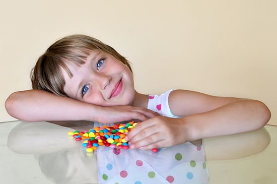
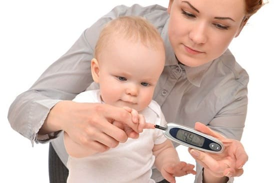

Диабет — это заболевание, при котором организм не вырабатывает достаточно инсулина (диабет 1-го типа) или не может эффективно использовать выработанный инсулин (диабет 2-го типа). Вот самые важные моменты, которые родители должны знать о профилактике и лечении детей с диабетом.
ДИАБЕТ 1-ГО ТИПА
Диабет 1-го типа (который обычно называют ювенильным или инсулинозависимым диабетом) может начаться в младенческом или детском возрасте. В отличие от диабета у взрослых и диабета 2-го типа, которые развиваются очень постепенно, при диабете 1-го типа поджелудочная железа резко прекращает производить инсулин, в результате чего ребенок заболевает очень быстро (в течение нескольких дней).
ПРИЗНАКИ И СИМПТОМЫ
• Ребенок часто мочится. Зачастую это один из самых ранних симптомов диабета.
• Ребенок часто жалуется на жажду. Поскольку ребенок чаще мочится и теряет много жидкости, он будет чаще просить пить.
• Обезвоживание и потеря веса. Потеря большого количества жидкости очень скоро приводит к повышенной утомляемости, сонливости и обезвоживанию с сухостью глаз, кожи и к быстрой потере веса.
• Учащенное дыхание. Высокий уровень сахара вызывает накопление в крови химических веществ, которые называются кетонами, что сопровождается учащением дыхания. Вы можете даже почувствовать запах кетонов – дыхание ребенка пахнет «гнилыми яблоками».
ЛЕЧЕНИЕ
Как только врач осмотрит ребенка и сведет воедино все признаки, вашего ребенка немедленно госпитализируют для проведения регидратации с помощью внутривенного введения жидкостей и дадут инсулин, чтобы снизить повышенный уровень глюкозы. Такое биохимическое состояние называется диабетическим кетоацидозом, и это неотложное состояние, которое врачей учат быстро расознавать.

В отличие от благоприятных и легких болезней, вам не придется сомневаться, а есть ли у ребенка диабет. Так как симптомы развиваются очень быстро, за несколько дней, вы вряд ли сможете их пропустить. |
ДИАБЕТ 2-ГО ТИПА
В отличие от диабета 1-го типа, который развивается из-за генетических или иммунологических нарушений и который невозможно предотвратить, развитие диабета 2-го типа почти всегда связано с нездоровым образом жизни и пищевыми привычками, поэтому его можно избежать. При диабете 2-го типа поджелудочная железа ребенка продолжает вырабатывать инсулин, но из-за нарушений обмена клетки становятся нечувствительными к действию инсулина, поэтому этот тип диабета еще называют инсулинрезистентным диабетом. В норме в каждой клетке есть миллионы микроскопических «дверей», и инсулин работает как «швейцар», чтобы провести в клетку только то количество сахара, которое необходимо для выработки энергии. При этом типе диабета «двери» не открываются как следует, мешая инсулину выполнять его работу. Это состояние можно также назвать инсулиновой несостоятельностью.
ПРИЗНАКИ И СИМПТОМЫ
В отличие от диабета 1-го типа при 2-м типе большинство детей выглядят тяжелобольными. Некоторые могут немного чаще мочиться немного больше пить (ребенок, пьющий много жидкости, но в остальном выглядящий здоровым, вряд ли болен диабетом, хотя педиатров часто спрашивают: «Мой ребенок мне пьет. У него может быть диабет?»).
Самый существенный признак того, что у вашего ребенка может быть предиабетическое состояние, — большой объем талии. Избыточное абдоминальное ожирение, также называемое «предиабетическое ожирение» повышает риск развития диабета 2 типа, так как эта избыточная жировая ткань в большом количестве вырабатывает вещества, препятствующие работе инсулина.
Если ваш врач подозревает «предиабет», он должен назначить анализы крови, такие как определение в крови уровня сахара, холестерола и общего липидного фона. Дети, особенно подростки с диабетом 2-го типа, часто склонны к развитию «повышенных» состояний: повышенного артериального давления, повышенных уровней сахара и холестерина в крови — группа биохимических нарушений, составляющих метаболический синдром.
ПРИЧИНЫ
Две самые распространенные причины диабета 2-го типа — слишком много едят и слишком много сидят. Фактически первое место среди причин занимает эпидемия питания нездоровой пищей и малоподвижного образа жизни. Центр контроля и профилактики заболевании (государственный научный центр, занимающийся прогнозированием тенденций заболеваемости) в 2002 году сделал шокирующее заявление: «Если американские семьи не изменят образ жизни и питания, одному из каждых трех детей суждено заболеть диабетом». Это страшное предсказание касается именно диабета 2-го типа.

ФАКТОРЫ РИСКА
Генетический риск. У некоторых национальностей высокая генетическая предрасположенность к развитию диабета 2-го типа. Это: афроамериканцы, коренные американцы, латиноамериканцы и жители островов Тихого океана.
Тучность. Хорошие новости: тучность предотвратима. Поскольку риск заболеть диабетом 2-го типа у тучных детей растет с каждым днем, педиатры, кроме обычного термина «тучный», теперь говорят: «У вашего ребенка предиабетическое состояние».
Будьте начеку, если ребенок:
• ест много фастфуда и готовых продуктов;
• пьет много подслащенных напитков;
• у него увеличивается объем талии и есть избыточные жировые отложения в области живота;
• у него крепкое, коренастое телосложение;
• в семье есть случаи заболевания диабетом или один из родителей имеет крупное телосложение;
• постоянно просит конфеты.
ПРОФИЛАКТИКА
• Избегайте подслащенных напитков.
• Избегайте продуктов с кукурузным сиропом с высоким содержанием глюкозы.
• Следуйте правилу двоек: ешьте вдвое чаще, вполовину меньше и жуйте вдвое дольше.
• Побольше упражнений. Дети, которые больше двигаются, меньше склонны к образованию жировых отложений на талии. Тонкая талия одно из главных профилактических средств для диабета 2-го типа.
Здоровье ребенка от докторов Сирс / Сирс У. и др.